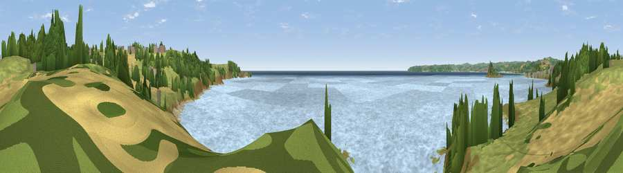

Viewpoint near Perranuthnoe
#17565 in England · top 52% of its area beats it · near PerranuthnoeThe view, rendered

A 360° render of this exact spot computed from the terrain model, tree cover and land cover — summer colours, afternoon light, calibrated against photographs of famous viewpoints. Real trees, hedges and buildings will differ in detail.
The panorama
Grey silhouette: terrain skyline in each direction (720 bearings, Earth curvature and refraction included). Dashed green: skyline with trees (+15 m) and buildings (+8 m) as obstacles. Blue strip: how far the ground is visible on each bearing.
Where the view opens
Wedge length = distance to the farthest visible ground on that bearing (vegetation-aware). Rings at 10, 25 and 50 km.
What fills the view
65% water · 23% grassland · 7% woodland · 4% cropland ·
Angular shares of the visible panorama (visual magnitude), not map area. Landscape diversity 0.44 (0–1 Shannon).
Key numbers
More beautiful places nearby
The staircase of upgrades: each row has a higher view potential than everything closer. Driving times are estimates from straight-line distance, calibrated against real road routing — check an actual route before setting out.
| Place | Direction | Drive | Score |
|---|---|---|---|
| Viewpoint near Perranuthnoe | NNW · 1 km | ~3 min | 58.3 |
| Viewpoint near Perranuthnoe | ESE · 1 km | ~3 min | 68.5 |
| Viewpoint near Praa Sands | ESE · 5 km | ~11 min | 69.9 |
| Godolphin Hill | ENE · 6 km | ~13 min | 81.5 |
| Tregonning Hill | E · 6 km | ~13 min | 83.0 |
| Rosewall Hill | NNW · 11 km | ~21 min | 88.0 |
| Viewpoint near Combe Martin | NE · 159 km | ~181 min | 88.9 |
| Holdstone Hill | NE · 160 km | ~182 min | 90.2 |
50.11277, -5.44745 · source: screening · position refined by local search. Computed location — check access rights before visiting.